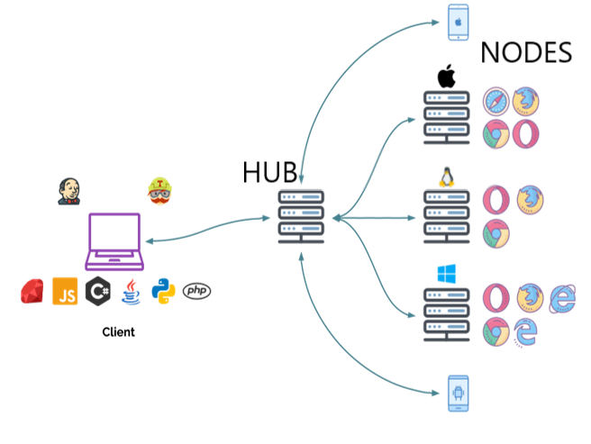

Docker驱动Selenium-grid实现分布式测试
[TOC]
Docker+Selenium-grid-4实现分布式测试
一、Selenium-grid 原理
Selenium Grid 允许通过将客户端发送的命令路由到远程浏览器实例来在远程机器上执行 WebDriver 脚本。
Grid 的目标:
提供一种在多台机器上并行运行测试的简单方法
允许在不同的浏览器版本上进行测试
- 启用跨平台测试

Hub
- 中介和管理
- 接受运行测试的请求
- 从客户端获取指令并在节点上远程执行它们
- 管理线程
Hub是发送所有测试的中心点。每个 selenium Grid 恰好由一个 Hub 组成。Hub需要能够从各自的客户端（即 CI 服务器、开发人员机器等）访问。Hub将连接一个或多个 Node 测试的节点。
Node
- Node 和执行的浏览器在同一台主机。
- 将自己注册到 Hub 上，并保持通信。
- 接收来自 Hub 的请求并执行他们。
Node 是在单个计算机系统上执行测试的不同的 Selenium 实例。Grid 中可以有许多节点。作为 Node 的机器不需要与 Hub 或其他 Node 的平台相同，也不需要具有相同的浏览器选择。Windows 上的节点可以提供 Internet Explorer 作为浏览器选项，而这在 Linux 或 Mac 上是不可能的。

二、win11 安装 Docker
下载 Docker Desktop：
https://www.docker.com/get-started/
直接安装，勾选 WSL2：
自动重启电脑，接受协议：
cmd 查看 wsl 会发现已经创建了两个发行版 docker：
选择不登录，继续：
设置中添加国内镜像源：
1 | "registry-mirrors": [ |
测试安装镜像：
1 | docker container run hello-world |
三、Docker 配置 Selenium-grid 服务
拉取主节点镜像：
1 | docker pull selenium/hub |
拉取子节点镜像：
1 | docker pull selenium/node-chrome |
创建自定义网络：
1 | docker network create grid |
查看网络：
其他三个网络是 Docker 内置的。bridge 是 Docker 的默认网络模式，相当于 Vmware 中的 Nat 模式，此模式会为每一个容器分配 Network Namespace、设置 IP 等，并将一个主机上的 Docker 容器连接到一个虚拟网桥上。
可以使用 --net 指定容器连接到哪个网络，若不指定则所有容器默认连接到内置的 bridge。
创建 selenium 主节点容器：
1 | docker run -p 自定义对应端口号-自定义对应端口号:4442-4444 -d --net 网络名称 --name hub容器别名 selenium/hub |
创建 selenium 从节点容器，并挂载到主节点：
1 | docker run -d --name 自定义节点名称 -p 自定义控制端口:5555 -p VNC所需端口:5900 --net 网络名称 -e SE_EVENT_BUS_HOST=hub容器名称 --shm-size=“2g” -e SE_EVENT_BUS_PUBLISH_PORT=4442 -e SE_EVENT_BUS_SUBSCRIBE_PORT=4443 浏览器镜像 |
在 Docker Desktop 可以看到正在运行的容器：
打开 http://localhost:5004/ 可以查看 selenium-grid 控制的所有 node：
测试分布式执行：
1 | import time |
四、VNC远程查看执行过程
下载 VNC 远程控制工具：
https://www.realvnc.com/en/connect/download/combined/
如果是本地搭建的 selenium gird，VNC搜索栏输入 localhost:VNC所需端口，回车，密码为 secret。
如果控制节点为 hub 地址，远程 VNC 地址为 hub地址:vnc所需端口。
本地测试结果：